version 0.8.3
Light Plot est un plan lumière intégré dans WhiteCat.
Il permet:
L'ambition de Light Plot est d'être simple et efficace.
Pour ouvrir Light Plot, clicker [Menus] ou appeller [Menus] par un click droit, sélectionnez [Light Plot]:
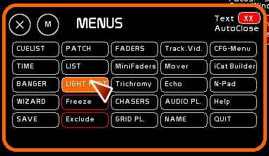
La fenêtre se présente ainsi:
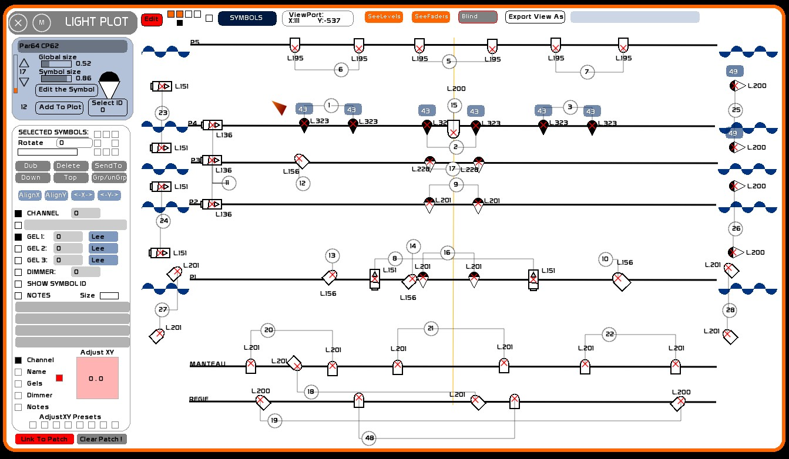
Le plan est un espace abstrait décomposable en plusieurs couches.
Il est un espace infini.
On peut y naviguer dans l'espace du plan via le ViewPort en X et en Y.
Ce principe de calques peut être comparé à un mille-feuilles.
Les calques se présentent, ainsi, de la couche la plus haute à celle qui est la plus basse:
[Symbols]
[Shapes]
[Background]
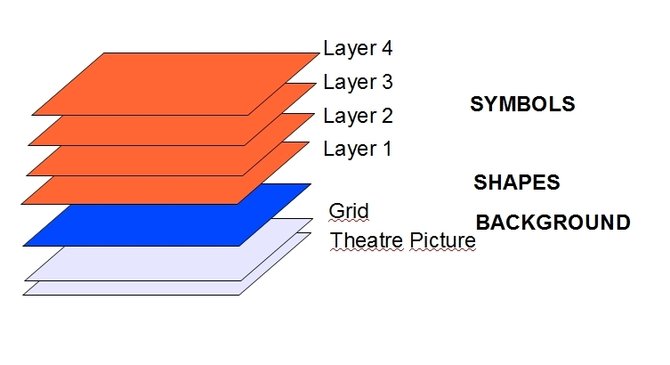
Elle est située en haut et comprend:
Lorsque Edit est ON, vous pouvez bouger les symboles sur le plan, modifier leurs propriétés et le plan dans son ensemble. La légende disparait et fait place aux outils d'édition de plan. Dans la légende vous aurez un résumé du nombre de projecteurs utilisés sur les calques visibles.
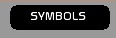
Il y 5 modes de menus dans LightPlot qui changent l'affichage à gauche du plan:
Pour changer de mode, clicker ce bouton.
Si vous désirez effacer une des section du plan ( Background, Shapes ou Symbols ):
Si par exemple vous êtes en mode [SHAPES] vous effacerez tout le contenu de [SHAPES], pas le plan, ni les les 4 calques de symboles.
Comme c'est généralement des 4 calques de [Symbols] dont on va avoir le plus besoin, ceux ci sont directement accessibles depuis la barre de menu haute.
Ces 4 calques sont dessinés l'un après l'autre au dessus du background et des shapes.
Chacun de ces calques peut comprendre 127 symboles.
Pour rendre visible un calque, il faut le sélectionner dans la première ligne des cases carrées.
Lorsqu'un calque est visible, il est affiché en orange.
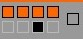
Pour éditer un calque, il faut se positionner sur le calque:
Vous pouvez utiliser les calques de deux manières:
Le dernier carré à droite permet de sélectionner en clickant les calques soit en solo, soit en multicouches.
Le mode solo:
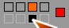
Le mode multicouches:
Il permet de naviguer dans l'ensemble du plan.
Quand il est actif, lorsque vous clickez à la souris sur le plan, et maintenez la souris clickée, vous glissez la vue de la fenêtre sur le plan:
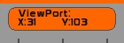
Les coordoonnées du point de vue s'affichent.
Il faut considérer la fenêtre de LightPlot comme une sorte de fenêtre, regardant au dessus d'une carte, ou alors, pour être plus imagé, se rappeler des hublots des matelas gonflables:
le plan est le fond de l'eau, et le ViewPort le hublot du matelas pneumatique.
Lorsque vous déplacez le matelas, vous voyez une autre partie du plan.
En utilisant ViewPort, vous déplacez la vue de la fenêtre, pas le plan, ni ses symboles.
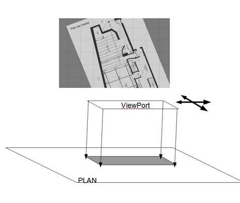
Il y a plusieurs façon de manipuler la position du viewport:
Pour nettoyer le Viewport et le remettre à X 0 Y 0:
Le bouton export permet d'exporter sous forme d'image la vue active du ViewPort.
Vous pouvez donc choisir de sauver plusieurs captures de votre fenêtre de plan, à votre guise : affichage des calques ou pas, segmentation d'un plan du grill en 3 vues ( plateau, face, face lointaine), etc etc…
Ces fichiers sont sauvés sous forme d'images JPG dans le dossier import_export de whitecat.
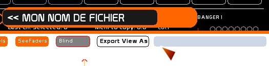
Les captures de plans se passent toutes fonction du ViewPort, y compris la légende.
Vous retrouverez vos différents exports dans white_cat/import_export.
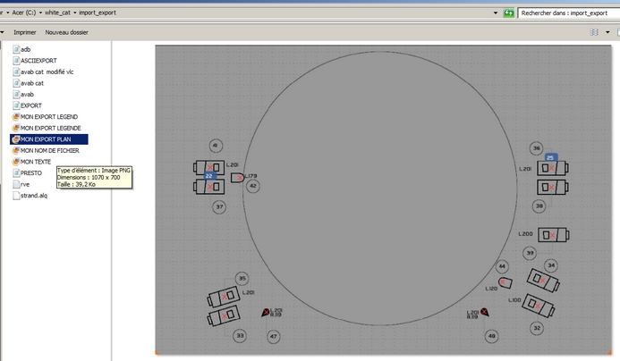
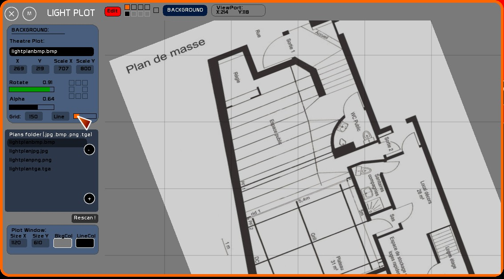
C'est dans cette section là que vous allez pouvoir:
Vous pouvez charger uniquement des images de type jpg, tga, bmp ou png.
Posez vos plans de théâtres dans le dossier /plans de WhiteCat.
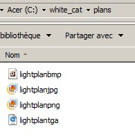
Puis ouvrez WhiteCat ( ou rafraichissez avec [Rescan !]) pour voir apparaitre votre plan du théâtre dans la liste des plans.
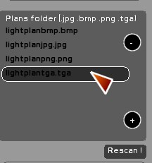
En clickant sur un fichier, celui ci est chargé en arrière plan:
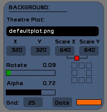
WhiteCat reste un logiciel de lumière, avant d'être un éditeur de plans lumières. C'est donc à vous de transformer les plans reçu dans les formats lus par WhiteCat.
Il y a beaucoup de logiciels gratuits qui permettent de récupérer une image d'un pdf ou d'un plan vectoriel en DXF.
Foxit reader est un petit lecteur pdf qui remplace aventageusement Adobe Reader: c'est léger, simple, et ultra puissant. Il y a deux versions libres: une sous forme d'installateur, l'autre sous forme de fichier zip ( que l'on peut exécuter de sa clé usb).
Ma préférence quant à l'édition d'images va à FastStone Image Viewer, rapide, puissant, ultra stable. Les fonctions de crop, de contraste, de désaturation sont suffisantes pour la plus part des plans.
Si vous avez besoin de gommer des éléments utilisez Gimp ou tout autre programme d'édition photo.
Il y a pléthore de petits programmes, comme Free DWG Viewer ou de convertisseurs http://anydwg.com/dxf-to-bmp-ex.html qui vous permettront d'exporter sous forme jpg ou bmp le plan reçu en dxf.
Vous pouvez manipuler les paramètres suivants:
Ces informations sont éditées en pixels.
ou alors:
Le petit carré permet de garder les proportions Scale X et Y lorsque vous retouchez en glissant la souris.
Pour enlever le blockage proportions, clicker le carré rouge.
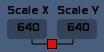
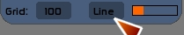
En clickant la case de grille, vous changez le quadrillage ( 0 / 25 / 50 / 75 / 100 / 125 / 150 / 175 / 200 ) posé sur le plan.
Cette échelle est donnée en pixels.
Libre à vous de l'interpréter : ce quadrillage permet de fournir une échelle arbitraire qui sera commentée dans la légende.
Le carreau est un étalon que vous définirez vous même, c'est une convention que vous mettez en place: 1 carreau = 1m ou un carreau = 50cm, etc etc… En utilisant un étalon carré, vous soulagez les régisseurs en donnant une lecture de votre plan simple et claire, sans sortir de règle.
Vous choisirez donc votre propre échelle, et étirerez le plan de façon à ce que ses proportions concordent avec votre échelle.
Vous pouvez basculer l'affichage de la grille en ligne pleines ( Line) ou en petit points ( Dots).
Un petit curseur permet de régler l'opacité du quadrillage.
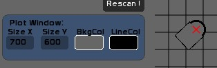
C'est directement depuis ce menu que vous pourrez modifier la taille de la fenêtre Plot:
ou alors:
Window size vous permet de préparer votre espace de travail à votre convenance.
Lors d'un export, c'est ce qui est affiché dans la fenêtre qui est exporté.
= Changement des couleurs de remplissage et de ligne ==
Vous pouvez changez la couleur de remplissage (BckCol) et de lignage des symboles et du plan (LineCol).
Ce changement se fait sur la plage du blanc au noir.
Clicker l'une des case de couleur, montez ou descendez la souris.
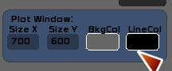
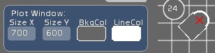
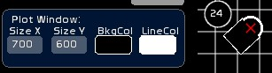
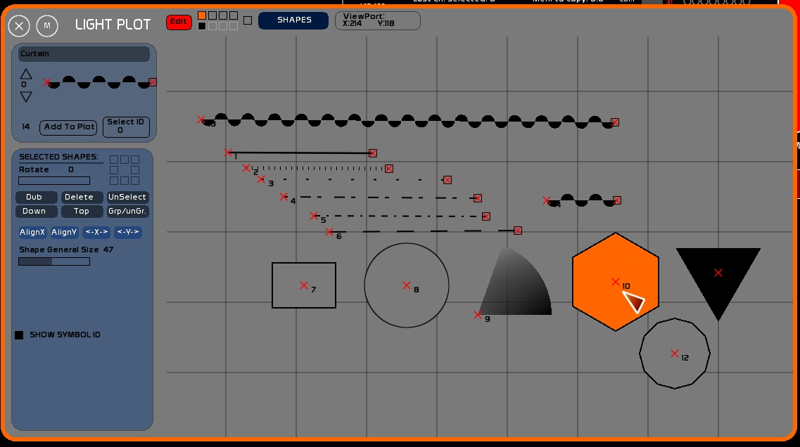
[Shapes] et [Symbols] sont beaucoup plus poussés que [Background].
Sur ces calques vous allez pouvoir poser des objets avec des propriétés particulières.
Vous avez plusieurs familles d'objets géométriques ( Shapes ) que vous pouvez insérer dans le plan:
Chaque objet à des propriétés particulières que vous pourrez éditer.
A noter qu'au changement de type d'objet, différentes options apparaissent:
| Objet | Option générale | Option particulière 1 | Option particulière 2 | Option particulière 3 |
| le rideau | La taille générale: le rayon du cercle | Couleurs | ||
| la ligne pleine | La taille générale: l'épaisseur | Couleurs | ||
| la ligne en pointillés | La taille générale: l'épaisseur | Couleurs | ||
| le rectangle | La taille générale | Le modèle de couleur | la proportion X que multipliera la taille générale | la proportion Y que multipliera la taille générale |
| le cercle | La taille générale | Le modèle de couleur | ||
| la part de cercle | La taille générale | Le modèle de couleur | L'angle d'ouverture | |
| le polygone | La taille générale: le rayon | Le modèle de couleur | le nombre d’arêtes | |
| le texte | - | Le modèle de texte ( taille et couleur) |
Lorsque vous insérez un objet il est inséré avec les propriétés choisies:
L'objet apparait alors en orange, sélectionné.
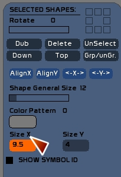
Vous avez droit à 126 objets par calque.
Lorsque vous sélectionnez un ou plusieurs objets, leurs propriétés sont reportées dans la fenêtre d'édition.
Changer une valeur, ou le type d'objet, modifiera les objets sélectionnés.
OU
Permet de copier une sélection d'objets et de la coller à la suite dans le plan.
Détruit du plan les objets sélectionnés.
Déselectionne les objets sélectionnés. Peut se faire avec la touche [ESCAPE].
Descend d'un niveau la sélection d'objets dans l'ordre d'apparition. Lorsque vous insérez un objet dans le plan, le premier objet inséré sera dessiné, puis le second, puis le troisième, etc… Ce qui veut dire que vous aurez besoin parfois de déplacer l'ordre d'apparition des objets.
Monte tout au dessus de la pile un objet.
Vous pouvez avoir besoin de grouper des objets shapes, vous permettant de créer une représentation sélectionnable et déplaçable d'un click.
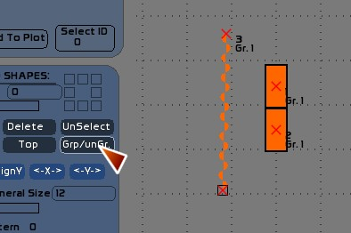
L'option group ne permet pas de changer les rotations et tailles de plusieurs objets de manière relative. Il s'agit essentiellement d'une commodité de sélection/déselection.
Aligne le centre des symboles d'une sélection sur la même abscisse.
Aligne le centre des symboles d'une sélection sur la même ordonnée.
Répartit les symboles entre les deux symboles les plus extrêmes sur l'axe des X.
Répartit les symboles entre les deux symboles les plus extrêmes sur l'axe des Y.
Cette petite case permet de visualiser le numéro du symbole dessiné, dans son ordre d'apparition.
Essentiellement pour des question de facilité par rapport à [Down] et [Top].
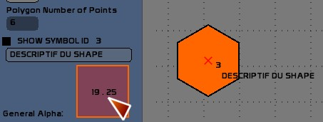
Cette case permet de rentrer un descriptif texte pour chaque shape sur le plan.
Elle permet aussi d'éditer l'objet Texte.
Editer le texte:
Ce descriptif est le seul attribut que l'on puisse éditer pour chaque Shape ( contrairement aux symboles de projecteurs, beaucoup plus fournis).
Une petite surface d'ajustement de ces coordonnées est éditable, de façon à déplacer le positionnement du texte par rapport au Shape.
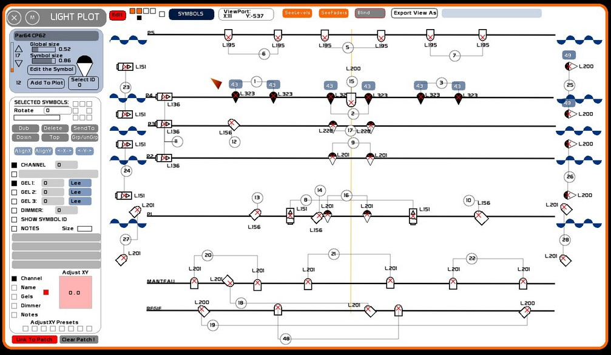
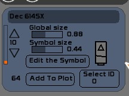
Ces informations seront reportées dans la légende et vous permettront de renommer à votre convenance les symboles fonction du parc de matériel fourni par la salle. Ainsi vous pouvez décider que le symbole correspondant aux découpes 713SX ( que vous n'utilisez pas) sera affecté aux Levrons. Vous lui donnerez le nom “Levron courte” et vous modifierez sa taille.
Pour éditer la taille générale de la bibliothèque:
Pour éditer un symbole:
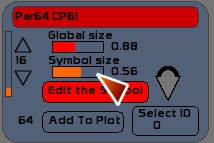
La librairie de symboles est sauvée dans chaque dossier de spectacle. Elle n'est pas générale au logiciel.
De gauche à droite:
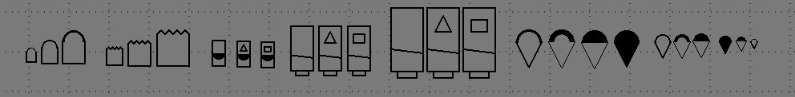
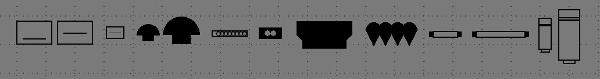
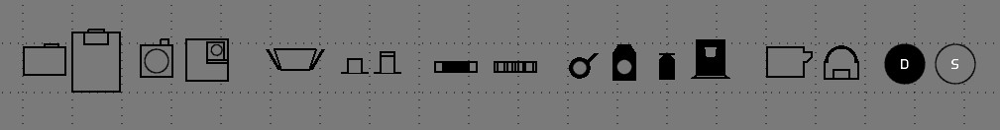
Accessoires PC et Fresnels:
Accessoires découpes:
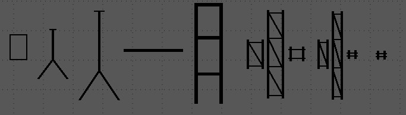
Comme pour [SHAPES], vous pouvez sélectionner ou déselectionner un symbole en clickant sur la croix rouge en son centre.
Le calque sur lequel est ce symbole est automatiquement sélectionné.
Lorsqu'un circuit est attribué à un symbole, celui est sélectionné-déselectionné en liaison avec la sélection des circuits ( frappes clavier, click souris).
* Pour déselectionner, reclicker l'objet
* Pour tout déselectionner utiliser la touche [ESC] ou faire un click droit
Lorsque vous clickez gauche maintenu sur le plan, hors symbole, tout mouvement de la souris sera répercuté sur le ou les symboles sélectionnés.
L'éditeur concerne les symboles sélectionnés sur le calque actif.
Lorsqu'un symbole est sélectionné, il peut être édité. Vous pouvez sélectionner plusieurs symboles en même temps.
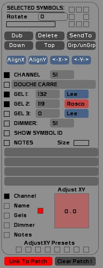
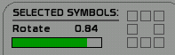
Vous pouvez utiliser le potentiomètre horizontal pour varier la rotation, ou utiliser les 8 pré-rotations en clickant l'un des carrés de rotation.
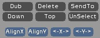
Duplique les symboles sélectionnés sur le calque actif, avec leurs propriétés ( orientation, type d'appareil, num. circuit, et gélatines)
Supprime les symboles sélectionnés du calque actif
Lorsque ce mode est enclenché, vous pouvez envoyer la sélection dans un autre calque.
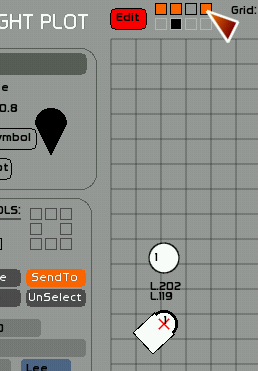
Losrque vous ajoutez des symboles sur un calque, ils sont empilés les uns après les autres sur celui-ci.
Vous aurez besoin parfois d'envoyer un symbole sous un autre( le pied d'un projecteur, sous un projecteur par exemple).
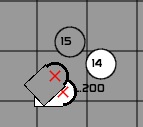
Permet d'envoyer les symboles sélectionnés tout au dessus de la pile des symboles du calque.
Permet de déselectionner les symboles sélectionnés.
Aligne le centre des symboles d'une sélection sur la même abscisse.
Positions de départ:
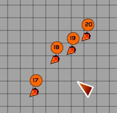
Résultat:
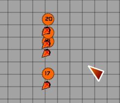
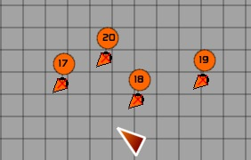
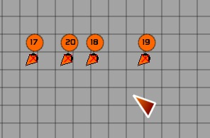
Il s'agit de la répartition des symboles entre les deux symboles les plus extrêmes sur l'axe des X.
Position de départ:
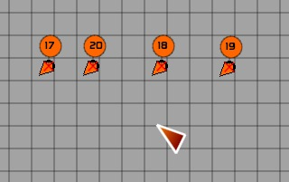
Résultat:
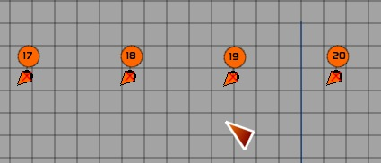
Il s'agit de la répartition des symboles entre les deux symboles les plus extrêmes sur l'axe des Y.
Vous pouvez éditer les attributs de chaque symbole:
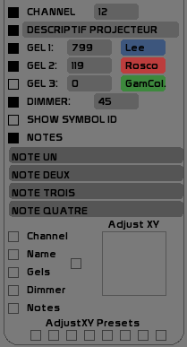
La visualisation de ces attributs sur le plan est activable en clickant le carré à gauche de chaque grand attribut ( Channel, Gel, Dimmer, …).
Ici un affichage complet:
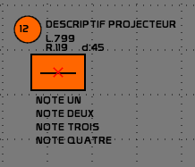
A noter que si le circuit, le dimmer, ou le numéro du gélatine sont égaux à 0, ils ne sont pas affichés. Un projecteur en direct, ou un pied, se verra donc affecté au circuit 0.
Les 4 notes permettent de renseigner de manière complète et personnelle le symbole:
Nota Bene: concernant les Etats Unis, la marque Rosco E-Color reprend la numérotation LEE, des références 002 à 452. Les 700 n'ont pas d'équivalent chez E-Color.
Pour des raisons de mise en page, il est souvent nécessaire de devoir déplacer les attributs autour du symbole ( numéro de circuit, gélatines, descriptif, dimmer).
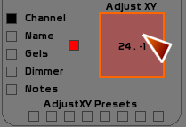
Il faut enclencher les cases de sélection de la propriété à modifier.
Puis clicker dans le carré rose sur la droite. Cette zone peut être considérée comme un joystick et permet de décaler en une ou plusieurs manœuvres la position d'une propriété par rapport au centre du symbole.
Vous pouvez stocker dans 8 presets les positions des attributs.
Ceci permet notamment d'avoir un raccourci de mise en page pour des projecteurs en face, en contre, au sol à cour, ou au sol à jardin.
Pour affecter à une sélection de symboles ce preset:
Pour nettoyer un preset:
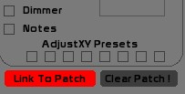
Très simplement, si votre plan lumière est prêt, vous pouvez patcher depuis Light Plot vos projecteurs, et oublier tout ce qui est jongle de numéros et erreurs de patch…
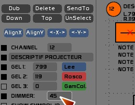
En activant Link To Patch, toute saisie de gradateur sur des symboles sélectionnés dans le plan est reportée automatiquement dans le patch.
Vous pouvez donc faire votre patch depuis votre plan.
Dans la fenêtre du Patch, cette option est activable de façon à reporter dans le plan lumière tout changement de grada sur un circuit.
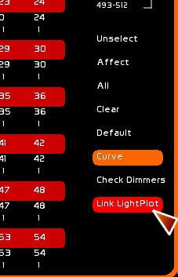
Mets à zéro, en clear, toutes les affectations.
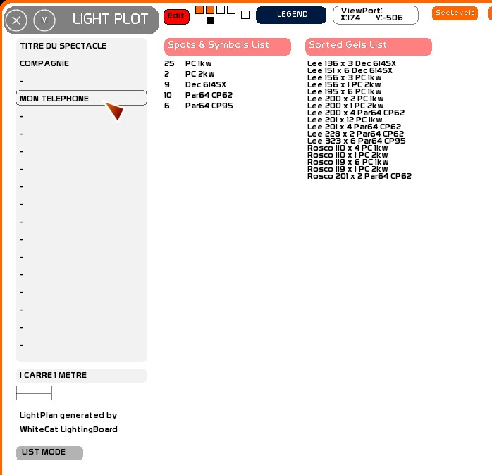
[Legend] permet de créer une légende avec un export des appareils et des formats de gélatines.
Sur la gauche de la fenêtre vous pouvez renseigner les contacts compagnie ou des nota bene, en utilisant [F5] et clickant les case de texte.
Vous pouvez aussi renseigner l'échelle que vous utilisez ( Un carré = 1m ).
Vous pouvez d'un click fournir la légende sous forme de symboles ou de liste d'appareils.
Les formats de gélatines sont triés par types de symboles.
Un certain nombre de commandes sont affectables en midi. Voir la Configuration Midi et Affectations Midi et le Synoptique d'affectations midi.
Ces commandes vous apporterons un réel confort en spectacle ( affichage des layers ) et en édition de plans ( navigation dans les symboles, édition des symboles, des paramètres, …, utilisation des presets de mise en forme des attributs) .